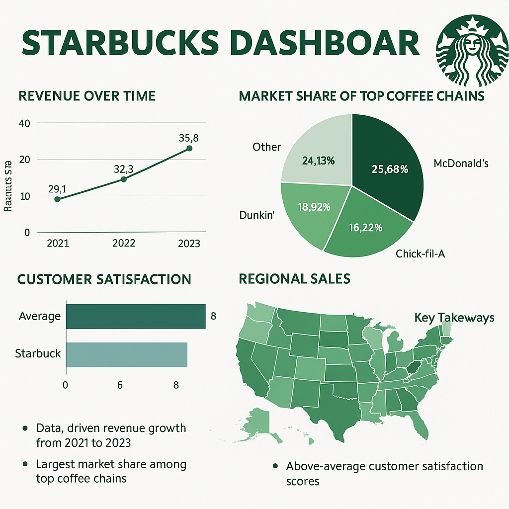

Welcome to Business Insights
Discover how Starbucks uses data to brew success in the competitive coffee industry!
How Starbucks Brews Success: A Deep Dive into Their Data Dashboard
🚀 Steady Sales Growth Over Time
Starbucks has demonstrated consistent revenue growth from 2021 to 2023, driven by international expansion, mobile ordering, and loyalty programs.
🥇 Dominating Market Share
Starbucks holds about 25.68% market share, surpassing competitors like McDonald's and Chick-fil-A.
😊 Customer Satisfaction: A Winning Formula
With a focus on product quality, cozy ambiance, and mobile convenience, Starbucks scores above average in customer satisfaction.
📍 Regional Sales Hotspots: Focused Urban Strategy
California, New York, and Texas lead regional sales, highlighting Starbucks' strong urban market presence despite urban congestion challenges.
📈 Key Takeaways
- Data-driven growth and innovations
- Strong loyalty and brand engagement
- Focus on operational efficiency in urban centers
Starbucks’ journey shows that blending data, technology, and customer experience leads to brewing global success!
📊 Starbucks Dashboard Visualization
Contact Me
Email: s_pulimamidi@u.pacific.edu